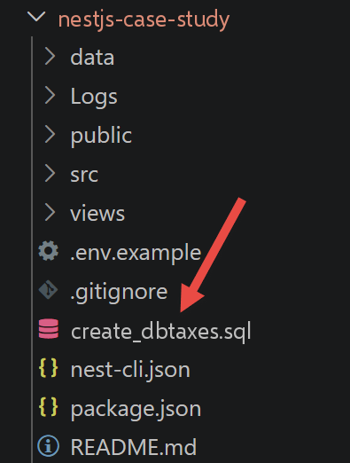
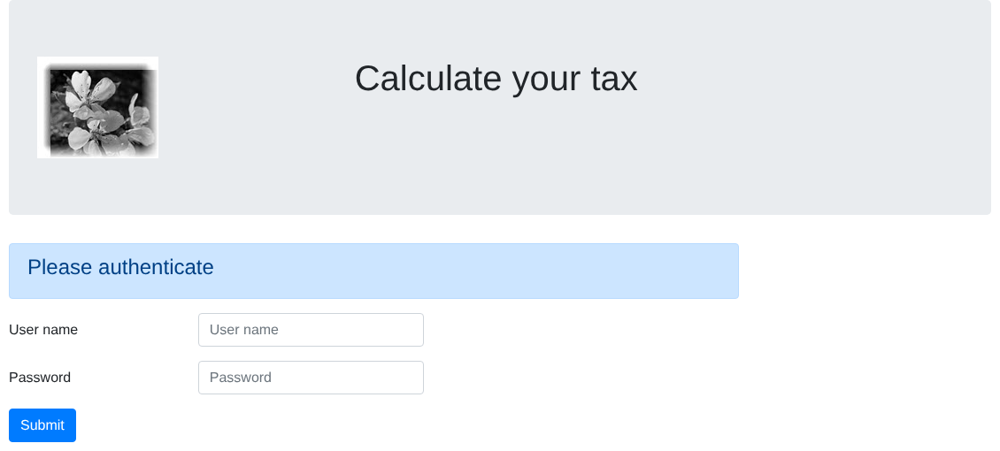
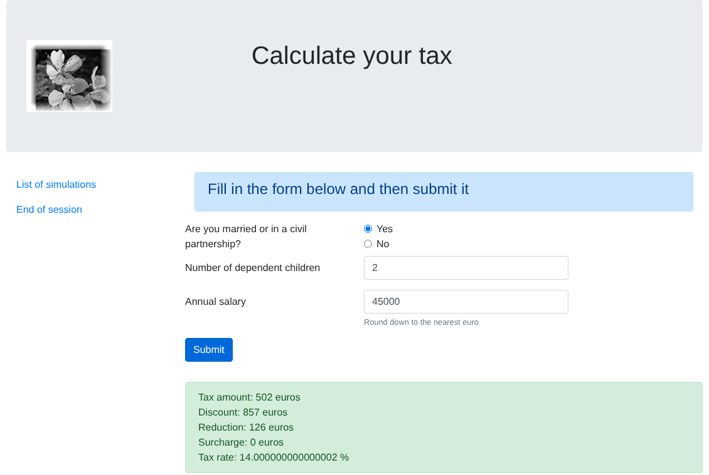
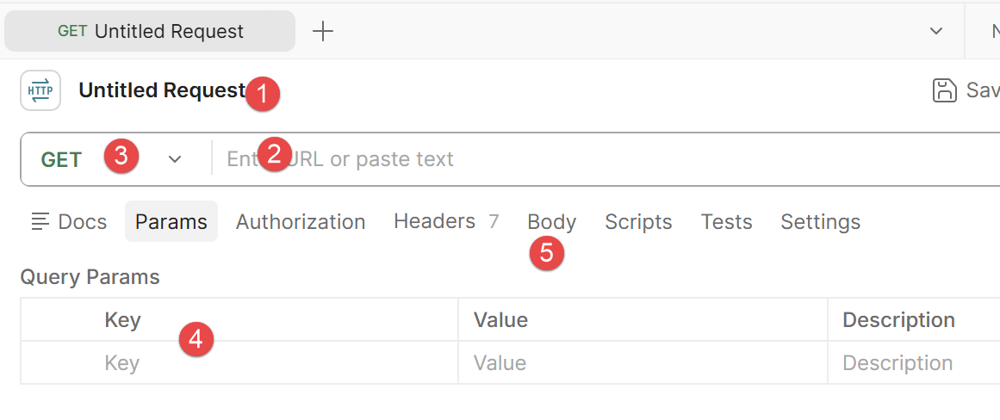
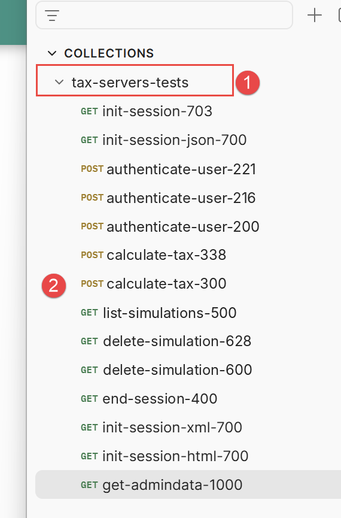
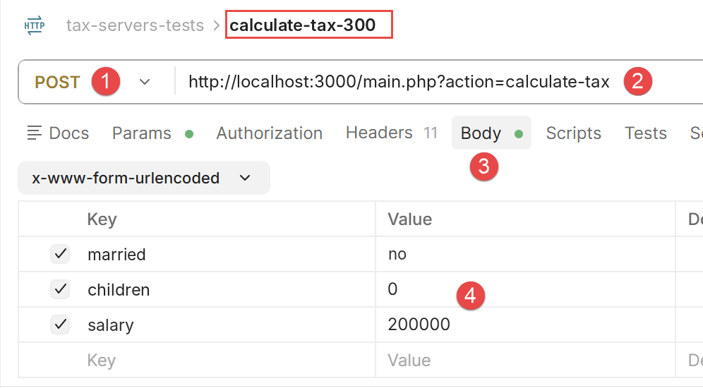
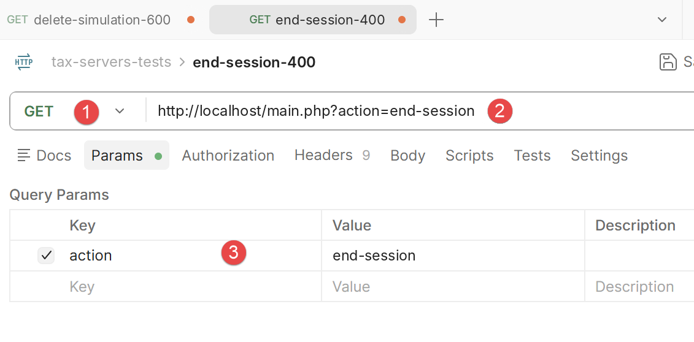

4. Instalação de um servidor NestJS
Este capítulo é reproduzido literalmente do curso de TypeScript: a instalação de um servidor web não é específica de nenhuma linguagem cliente em particular, e o servidor instalado aqui serve de alvo comum para os dois cursos. A única diferença é que as numerosas capturas de tela do documento TypeScript (instalação do Laragon, do HeidiSQL, do Postman —uma centena de imagens no total) não são reproduzidas aqui; o texto, porém, é reproduzido na íntegra. Para instruções visuais passo a passo, consulte o documento [Introduction to the TypeScript Language and the NestJS Web Framework], que descreve exatamente a mesma instalação.
Nota: A seguir, faz-se referência por vezes a um servidor PHP, aquele mencionado no curso [Introduction to the PHP7 Language Through Examples]. O servidor NestJS implementa os mesmos serviços que esse servidor PHP.
Estudaremos as funções HTTP do Dart, que permitem consultar um servidor web. Para nossos testes, precisamos de um servidor web. Usaremos o desenvolvido para o curso de TypeScript (Capítulo [Case Study: The Tax Calculation Server in NestJS], não abordado neste curso, mas cujo servidor continua sendo usado como alvo). Esse servidor hospeda um serviço JSON que oferece os seguintes serviços:
- [init-session] - GET [main.php?action=init-session&type=json] - informa ao servidor que queremos respostas em JSON;
- [authenticate-user] - POST [main.php?action=authenticate-user]: os dois parâmetros postados [user, password] determinam se a conexão ao serviço JSON será permitida ou não. Por padrão, as credenciais são [admin, admin];
- [calculate-tax] - POST [main.php?action=calculate-tax]: os parâmetros postados [married, children, salary] são usados para calcular um imposto ([married]: “yes” ou “no”, [children]: número de filhos do contribuinte, [salary]: salário anual do contribuinte);
- [list-simulations] - GET [main.php?action=list-simulations] - lista as simulações realizadas desde o início da sessão;
- [delete-simulation] - GET [main.php?action=delete-simulation&number=x] - remove a simulação nº x da lista de simulações;
- [get-admindata] - GET [main.php?action=get-admindata] - recupera todo o banco de dados associado ao servidor em um objeto JSON;
- [end-session] - GET [main.php?action=end-session]: encerra a sessão. Para iniciar outra sessão, o usuário deve emitir o comando “init-session” acima.
4.1. Instalação do Laragon
Em setembro de 2026, a ferramenta Laragon está disponível na URL [Download Laragon – Fast & Modern Dev Environment ]. O Laragon inclui ferramentas que permitem instalar um servidor PHP e o SGBD MySQL:

- em [1], um servidor web Apache;
- em [2], o SGBD MySQL;
- em [3], uma ferramenta de mensagens que não usaremos;
- [4] inicia todos os serviços (Apache, MySQL, MailPit);
- [5] exibe a página web da URL [http://localhost]. Por padrão, essa URL refere-se à pasta <laragon-install>\www, onde <laragon-install> é a pasta de instalação do Laragon;
- em [6], inicia a ferramenta HeidiSQL, que permite gerenciar bancos de dados MySQL. Usaremos essa ferramenta para criar o banco de dados usado pelo servidor de cálculo de imposto;
- em [7], abre um terminal; todos os binários necessários ao Laragon estão no PATH;
- em [8], abre uma janela do Windows Explorer na pasta associada à URL [http://localhost];
A pasta de instalação do Laragon contém os seguintes itens:
 |
- Em [1], a pasta [bin] contém numerosos aplicativos:
 |
- Em [1], o servidor web Apache;
- em [2], um terminal de linha de comando;
- em [3], um cliente para [git] que permite gerenciar as diferentes versões de um projeto;
- em [4], um gerenciador de banco de dados;
- [5], um gerenciador de e-mails;
- em [6], o SGBD MySQL;
- [7], outro servidor web;
- em [8], [node.js] para executar scripts JavaScript;
- [9], um editor de texto;
- [10], o interpretador PHP;
- [11], o interpretador [Python];
- [12], um servidor de cache;
O Laragon vem com um ambiente de desenvolvimento completo. Neste curso, usaremos apenas o SGBD MySQL, [6], e o [heidisql] para gerenciá-lo graficamente;
4.2. Instalação e configuração do servidor NestJS
Um servidor NestJS para um cálculo de imposto bastante simplificado pode ser encontrado na pasta nestjs-case-study dentro do diretório de scripts deste curso:
nestjs-case-study/
├── package.json
├── nest-cli.json
├── .env.example
├── create_dbtaxes.sql
├── src/
│ ├── main.ts
│ ├── main.controller.ts
│ ├── app.module.ts
│ ├── actions/
│ ├── config/
│ ├── entities/
│ ├── filters/
│ ├── model/
│ ├── responses/
│ ├── session/
│ └── utilities/
└── views/
Node.js e npm devem estar instalados para este servidor (não são necessários para os próprios scripts Dart). Acesse a pasta nestjs-case-study e instale suas dependências:
O servidor precisa de um .env arquivo para especificar os parâmetros de conexão ao banco de dados MySQL criado pelo Laragon (veja acima), bem como a porta de escuta. Copie o arquivo .env.example fornecido para .env e modifique-o da seguinte forma:
PORT=3000
TAX_DATA_SOURCE=mysql
DB_HOST=localhost
DB_PORT=3306
DB_NAME=dbtaxes-2019
DB_USER=admtaxes
DB_PASSWORD=pwdtaxes
CORS_ALLOWED=true
SESSION_SECRET=change-me-in-production
- PORT: a porta de escuta do servidor NestJS (o padrão é 3000).
- TAX_DATA_SOURCE: MySQL para usar o banco de dados criado a seguir;
- DB_HOST, DB_PORT, DB_NAME, DB_USER, DB_PASSWORD: os parâmetros de conexão ao banco de dados dbtaxes-2019 que criaremos com o HeidiSQL (veja abaixo)—as mesmas credenciais definidas no script create_dbtaxes.sql mostrado na árvore de diretórios acima;
- CORS_ALLOWED: permite chamadas CORS de um cliente Dart (navegador) executado em outra porta.
- SESSION_SECRET: a chave usada para assinar o cookie de sessão—altere-a se o servidor for algum dia tornado acessível publicamente.
4.3. Criação do banco de dados
Para criar o banco de dados MySQL exigido pelo servidor NestJS, usamos uma opção do Laragon:
 |
- Em [1], todos os serviços devem estar iniciados;
- em [2], a opção [Database] permite gerenciar o banco de dados;
A opção [Database] inicia um utilitário chamado HeidiSQL:
 |
- Em [1], você pode selecionar diversas opções de SGBD. O valor padrão fornecido é o SGBD MySQL. Isso é aceitável;
- em [2], você se conecta ao HeidiSQL;
 |  |
- Em [1-2], execute o arquivo SQL e, em seguida, selecione o arquivo [create_dbtaxes.sql], que você encontrará na pasta [nestjs-case-study]:

A execução do arquivo [2] criará o banco de dados [dbtaxes-2019] usado pelo servidor de cálculo de imposto. Para visualizá-lo, pressione F5 no HeidiSQL para atualizar a exibição:
 |
O banco de dados [dbtaxes-2019] foi criado.
4.4. Inicialização do servidor NestJS
Depois que o arquivo .env estiver no lugar (e o banco de dados tiver sido criado), abra um terminal na raiz da pasta [nestjs-case-study] e, em seguida, compile e inicie o servidor:
Para desenvolvimento, com reinício automático após cada alteração do código-fonte, use:
Em ambos os casos, o console exibe:
[Nest] ... [NestFactory] Starting Nest application...
[Nest] ... [InstanceLoader] AppModule dependencies initialized
[Nest] ... [RoutesResolver] MainController {/}:
[Nest] ... [RouterExplorer] Mapped {/main.php, ALL} route
[Nest] ... [NestApplication] Nest application successfully started
Tax calculation server (NestJS) started on http://localhost:3000
JSON entry point: http://localhost:3000/main.php?action=init-session&type=json
HTML entry point: http://localhost:3000/main.php?action=init-session&type=html
O servidor NestJS tem um único ponto de entrada (main.php, mantido por compatibilidade, embora seja na verdade NestJS) que recebe todas as requisições, e um parâmetro de requisição “action” que seleciona o processamento a ser realizado:
4.5. Testes HTML do servidor de cálculo de imposto
Se ainda não o fez, inicie todos os serviços do Laragon (para o MySQL), bem como o servidor NestJS (npm run start:prod ou npm run start:dev; veja acima). Em seguida, em um navegador, solicite a URL http://localhost:3000/main.php?action=init-session&type=html — é a mesma ação init-session do servidor PHP, com o mesmo parâmetro type=html , mas na porta 3000:
 |
As credenciais são admin/admin, exatamente as mesmas do servidor PHP—elas são definidas da mesma forma, no código do servidor e não em config.json. Digite-as:
 |
Preencha o formulário e envie-o. Você verá a página a seguir:
 |
O resultado do cálculo do imposto é exibido —esta página usa de fato o banco de dados que acabamos de criar. O link “List of simulations” no menu à esquerda exibe o histórico de cálculos desta sessão:
 |
Se você obtiver esses resultados, o servidor NestJS de cálculo de imposto está funcionando corretamente com seu banco de dados MySQL. Estamos agora prontos para consultar o servidor com clientes Dart. Para isso, usaremos a versão JSON do servidor.
4.6. A API e as versões JSON do servidor de cálculo de imposto
4.6.1. Testes com o Postman
O servidor PHP foi testado com a ferramenta desktop Postman. A mesma coleção de requisições (tax-servers-tests.postman_collection.json, fornecida na pasta nestjs-course dos scripts do curso de TypeScript) funciona de forma idêntica com o servidor NestJS: a API e o JSON são exatamente os mesmos—mesmas ações, mesmos parâmetros, mesmos códigos de status. No Postman, basta alterar a porta de cada requisição (80 → 3000), ou, mais simplesmente, a URL base na coleção, se você a definiu como variável.
A ferramenta Postman está disponível na URL [https://www.postman.com/downloads/]. Talvez seja necessário criar uma conta.
Inicie todos os serviços do Laragon e, em seguida, abra o aplicativo desktop do Postman:
 |  |
- Em [1-2], crie uma requisição HTTP para consultar o servidor de cálculo de imposto;
 |
- Em [1], você pode dar um nome à sua requisição HTTP. Você poderá salvá-la e recuperá-la;
- Em [2]: digite a URL do servidor que deseja consultar;
- Em [3]: selecione o tipo de requisição HTTP. Usaremos dois deles a seguir: GET e POST;
- em [4]: se sua requisição tiver parâmetros do tipo [?param1=val1¶m2=val2&…], você pode defini-los aqui;
- em [5]: se o tipo de requisição for POST, é aqui que você define os valores postados;
Na pasta [nestjs-course] dos scripts do curso de TypeScript, você encontrará uma coleção de requisições HTTP ao servidor de cálculo de imposto que pode ser importada no POSTMAN.

Proceda da seguinte forma. No Postman, execute [Ctrl-O]:
 |
- Use o link [1] para importar o arquivo [tax-servers-tests.postman_collection.json] da pasta [nestjs-course]:
 |
- Em [1], o nome da coleção importada;
- em [2], seu conteúdo. Trata-se de uma lista de requisições (HTTP) ao servidor de cálculo de imposto (JSON);
Vejamos, por exemplo, a requisição chamada [init-session-json-700]. Ela inicia uma sessão JSON com o servidor:
 |
- Em [1], a requisição HTTP é um GET;
- em [2], a URL consultada. Ela solicita o início de um diálogo JSON com o servidor;
- em [3-4], encontramos os parâmetros do GET;
- em [5], para enviar a requisição ao servidor de cálculo de imposto;
Antes de enviar a requisição, certifique-se de ter iniciado os serviços do Laragon. A resposta do servidor, em JSON, é a seguinte:
 |
Agora use a requisição chamada [init-session-703]:

A requisição [1-3] é inválida. Os parâmetros devem ser do tipo [?action=xx&type=yy], em que “type” pode ser “html”, “xml” ou “json”. O tipo “x” não será reconhecido. A resposta do servidor, em JSON, é a seguinte:
 |
Reenvie a requisição [init-session-json-700] para reiniciar uma sessão JSON. Em seguida, envie a requisição [authenticate-user-200] para se autenticar:
 |
- Em [1], a requisição é um POST;
- em [2], a URL da requisição de autenticação;
- em [3], o corpo do POST, que contém os valores postados;
- [4-5], os dois valores postados. São as credenciais do administrador do aplicativo. Elas são definidas no arquivo [config.service.ts] do servidor;

A resposta do servidor, em JSON, é a seguinte:
 |
Depois de autenticado, você pode realizar um cálculo de imposto. Para isso, use a requisição [calculate-tax-300]:
 |
- Em [1], trata-se de uma requisição POST;
- em [2], a URL consultada;
- em [3-4], os três valores são postados;
A resposta JSON é a seguinte:
 |
Execute a requisição várias vezes, alterando os valores postados a cada vez. Feito isso, execute a requisição [list-simulations-500], que exibirá a lista das simulações realizadas:
 |
- A requisição GET [1-4] tem apenas um parâmetro: [action]. A resposta JSON é a seguinte:
 |
Esta é a lista das simulações que você realizou.
Use a requisição [delete-simulation-600] para excluir uma simulação:
 |
- Em [2], a URL é consultada com um GET. Ela inclui dois parâmetros: [action, number]. [number] é o número da simulação que você deseja excluir da lista de simulações. Aqui, o número 0 refere-se à primeira simulação da lista;
A resposta do servidor, em JSON, é a seguinte:
 |
A resposta JSON é a lista de simulações restantes após a exclusão de uma delas;
Por fim, você pode encerrar a sessão com a requisição [end-session-400]:
 |
A URL da requisição [1-2] tem apenas o parâmetro [action] (3). A resposta JSON é a seguinte:
 |
4.6.2. Testes com curl
Também podemos usar a ferramenta [curl] para testar os serviços JSON do servidor. Todas as requisições a seguir usam a mesma sessão HTTP (a opção -b/-c cookies.txt do curl preserva o cookie de sessão entre as chamadas, exatamente como um navegador ou o Postman faria):
Vamos iniciar uma sessão JSON com a ação [init-session]:
O código de status 700 confirma que a sessão foi iniciada—é o mesmo código que o servidor PHP retornava. Agora vamos nos autenticar usando a ação [authenticate-user]—uma requisição POST, com um único parâmetro na URL (action) e as credenciais postadas:
curl -b cookies.txt -c cookies.txt -X POST "http://localhost:3000/main.php?action=authenticate-user" \
-d "user=admin&password=admin"
{
"action": "authenticate-user",
"status": 200,
"response": "Authentication successful [admin, admin]"
}
Agora você pode calcular impostos usando a ação [calculate-tax], novamente com POST com os três parâmetros postados: estado civil, filhos e salário:
curl -b cookies.txt -c cookies.txt -X POST "http://localhost:3000/main.php?action=calculate-tax" \
-d "married=yes&children=2&salary=45000"
{
"action": "calculate-tax",
"status": 300,
"response": {
"married": "yes",
"children": 2,
"salary": 45000,
"tax": 502,
"surcharge": 0,
"discount": 857,
"reduction": 126,
"rate": 0.14
}
}
Os valores são exatamente os mesmos (imposto de €502, um desconto de €857, uma redução de 126 €, e uma alíquota de 14%) que os exibidos no navegador na seção anterior—as duas versões, HTML e JSON, compartilham o mesmo mecanismo de cálculo. A lista de simulações é obtida com a ação [list-simulations], um simples GET:
{
"action": "list-simulations",
"status": 500,
"response": [
{
"married": "yes", "children": 2, "salary": 45000,
"tax": 502, "surcharge": 0, "discount": 857, "reduction": 126, "rate": 0.14
}
]
}
Execute a requisição [calculate-tax] várias vezes alterando os valores postados e, em seguida, use [delete-simulation] para remover uma simulação da lista (&number=x refere-se ao seu número de ordem) e [get-admindata] para recuperar todo o banco de dados no formato JSON (faixas de imposto e constantes de cálculo). Por fim, encerre a sessão com a ação [end-session]:
Agora você tem um bom entendimento da API e do JSON expostos pelo servidor NestJS de cálculo de imposto—que é exatamente o mesmo do servidor PHP. Podemos agora passar à escrita de scripts Dart que consultam esse servidor.